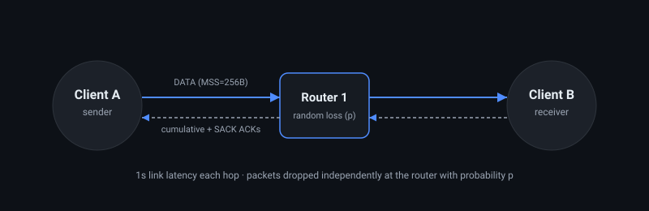
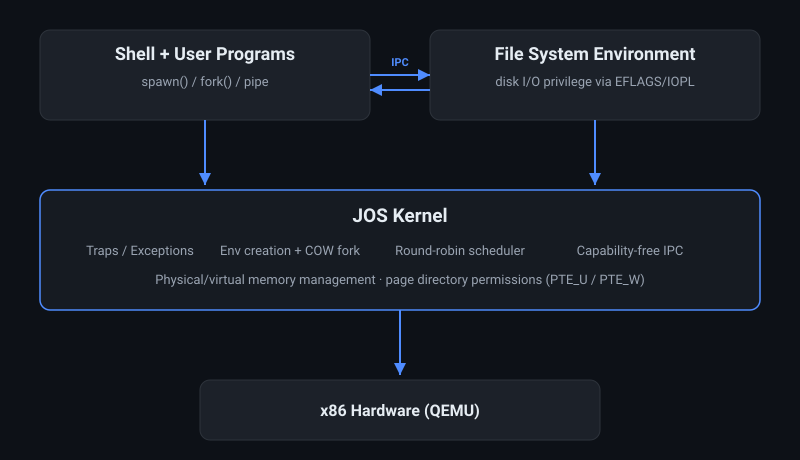
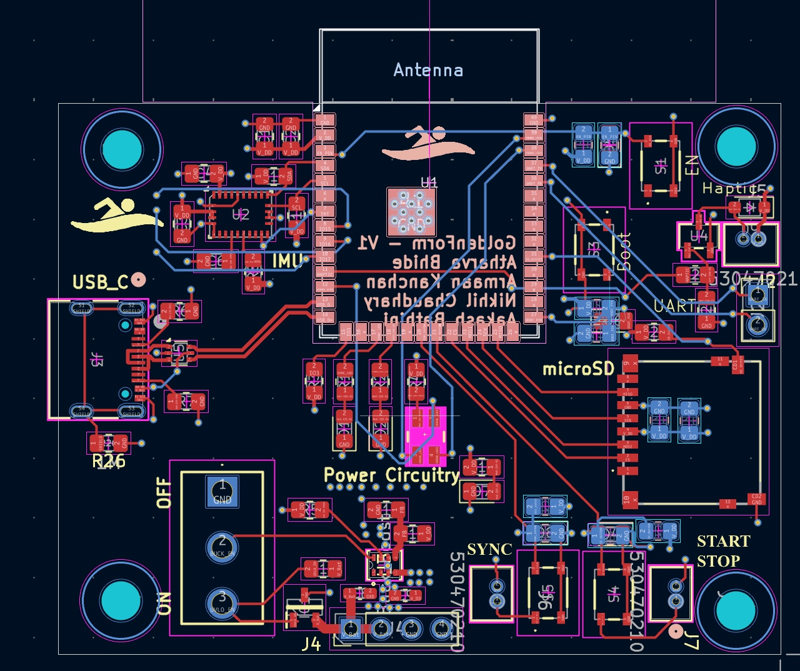

Write-ups for the projects I've put the most work into — architecture, verification methodology, and results. More being added as I clean up the repos.

Socket-level HTTP client/server, a distance-vector routing protocol with split horizon, and a custom reliable transport protocol (SACK, adaptive RTO, fast retransmit) over an intentionally lossy link.

Built an x86 Unix-like OS from scratch across MIT 6.828's lab sequence: boot loader, virtual memory, user environments/traps, preemptive multitasking with copy-on-write fork and IPC, and a file system with a shell.

Hand-worn swim tracker: custom PCB (ESP32-S3 + 9-axis IMU), ESP-IDF firmware, and a Wi-Fi dashboard with drift-corrected 3D stroke replay. 19 design requirements, formally verified against source.
Single-cycle → 5-stage pipeline → cache hierarchy → dual-core with MSI coherence. SystemVerilog, verified in QuestaSim, synthesized on Cyclone IV.
USB 1.0 bulk-transfer endpoint with an AHB-Lite client interface — NRZI encoding, circular FIFO, and a full SystemVerilog verification suite.
Two-player trivia game across two STM32 boards with TFT displays, USART inter-board comms, and GPIO keypad input.